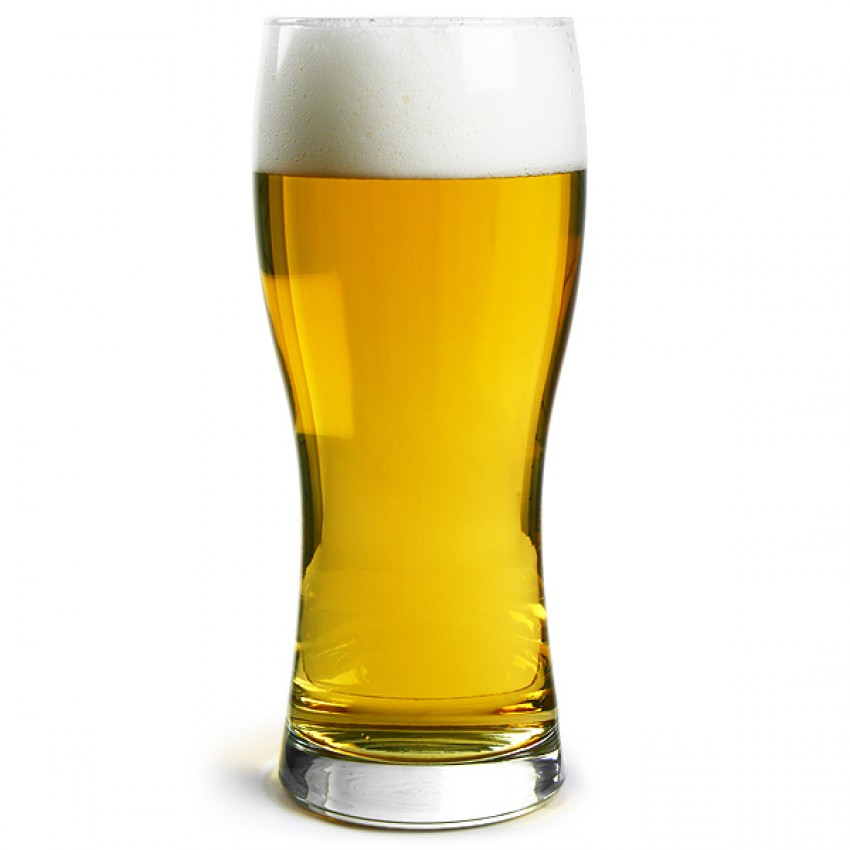
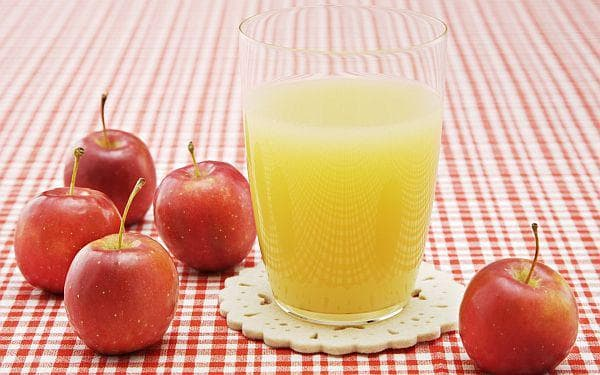
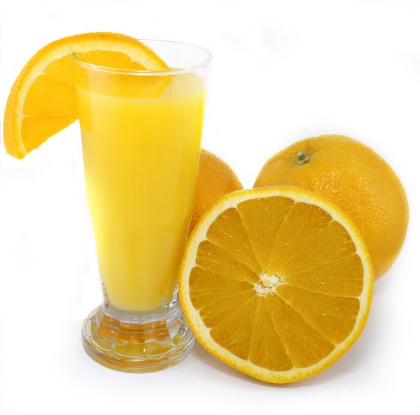
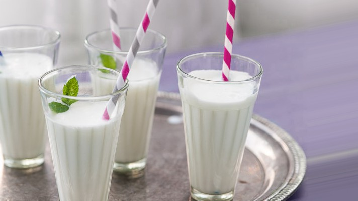

|  | За горещите летни дни, с доза охлаждане и свежест. Свежо от планината цена: 2 лв/500мл. |
|  | Натурален прясно-изцеден сок от сезонни плодове: май, юни-череши, август, септември-грозде, ябълки цена: 5 лв/300мл. |
|  | Доза витими с прясно-изцеден натурален сок от лимони, грейпфрути и портокали цена: 5лв/300мл. |
|  | Доза свежест, в една чаша цена: 2лв/300мл. |